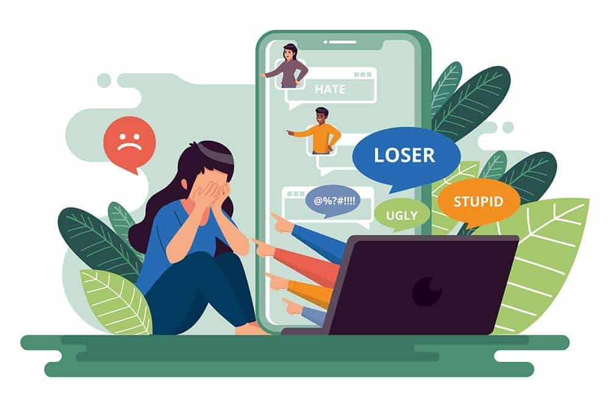

En línea con lo anterior, por ser parte de las herramientas que emplean para alcanzar sus objetivos, tenemos a los hackers maliciosos. Este tipo de cibercriminales se introducen en los equipos personales de particulares y empresas o entidades públicas, para robar datos, dañar la infraestructura o los sistemas operativos, bloquear un servicio, robar identidades, llevar a cabo extorsiones, etc.
El hacking malicioso explota vulnerabilidades en hardware y software, pero también en los malos hábitos de los usuarios (uso de contraseñas débiles, ingeniería social, poca precaución a la hora de descargar contenidos, etc.).
El robo de credenciales es otro de los peligros de internet que podemos enfrentar más o menos a diario, especialmente llevado a cabo a través de ataques de phishing
donde los atacantes, a través de técnicas de ingeniería social y uso de webs falsas o fraudulentas que imitan a las reales, intentan hacerse con las contraseñas de nuestras cuentas, para hacerse con el control de las mismas y todo lo que eso conlleva, desde la pérdida de la cuenta, el acceso a datos privados, hasta posibles pérdidas económicas.
Una de las consecuencias del robo de contraseñas es la suplantación de identidad, cuando esta se produce a través del robo de cuentas o perfiles en redes sociales. La suplantación de identidad puede no solo crearnos problemas de reputación (si quien se hace pasar por nosotros comienza a publicar contenidos nocivos o tóxicos), sino también poner en riesgo la información personal que tengamos en las cuentas o perfiles robados.
Además, la suplantación de identidad también puede causarnos problemas legales, ya que no en pocas ocasiones se emplea este método para cometer otros delitos o estafas, quedando estos, aparentemente, a nuestro nombre.
Las noticias falsas o fake news son también un riesgo de internet, por lo nocivas que pueden llegar a ser al crear tensión, transmitir mensajes de odio, manipular a la gente, etc.
Estos bulos, además, pueden dañar la reputación de personas o instituciones, crear alarma social respecto a un tema o contaminar la opinión pública.
El ciberacoso es el acoso llevado al entorno digital, donde la víctima está expuesta 24/7 a los ataques de sus acosadores. La diferencia con el ciberacoso es que el daño no es tanto físico como psicológico, ya que, especialmente a través de redes sociales, se insulta, humilla, amenaza o se difunde información falsa sobre la víctima, que en ocasiones se hace viral y trasciende el ámbito más cercano a esta, involucrándose completos desconocidos en la campaña de ciberacoso.
El ciberacoso puede llegar a tener consecuencias terribles para sus víctimas, llevándolas, en los casos más extremos, al suicidio.
El grooming es uno de los peligros a los que los menores pueden estar más expuestos cuando navegan o usan aplicaciones de juego o mensajería sin supervisión de un adulto.
Esta técnica consiste en que un adulto crea un perfil falso para tratar de engatusar a un menor e ir ganándose su confianza, con el objetivo final de conseguir imágenes de contenido sexual del menor e incluso lograr un encuentro real entre ambos.
Los jóvenes comparten gran parte de su día a día en redes sociales, lo que puede derivar en una pérdida de intimidad y sobreexposición del menor (en ocasiones, los culpables de esto pueden ser los mismos padres, en lo que denominamos sharenting).
Los menores no llegan a ser conscientes de lo lejos y a cuánta gente puede llegar lo que publican en internet y los riesgos inherentes a ellos.
Acceder a contenido inapropiado está a tan solo uno o dos clicks de distancia para adolescentes y niños;
desde contenido violento, pasando por salones de juego online, hasta contenido pornográfico.